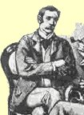
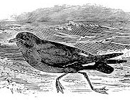

Monday, March the 1st, 2004
back to: title, date or indexes
It's well known that Sherlock Holmes described his arch enemy Moriarty as “the Napoleon of crime”. Less celebrated, but far, far more evocative, is his description of Dr Watson as “the stormy petrel of crime” (see The Adventure of the Naval Treaty, and also see below):

Watson & petrel : the petrel is the one on the right